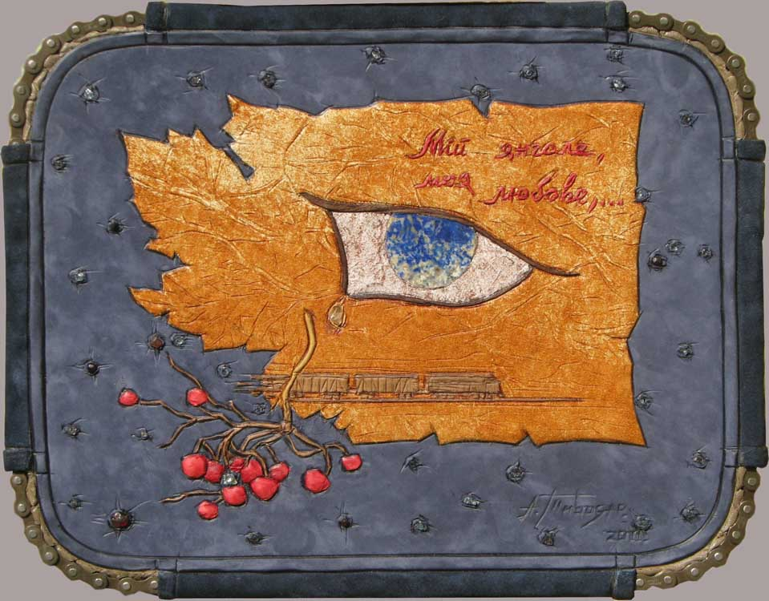

|  | |
| Памяти Василия Стуса. Кожа, гранат, апатит, горный хрусталь, лазурит. 27 x 34.5 см. |
|
In memory of V. Stus. Leather, garnet, apatite, rock crystal, lazurite. 27 x 34.5 cm. |
|
Пам`яті Василя Стуса. Шкіра, гранат, апатит, гірський кришталь, лазуріт. 27 x 34.5 см. |
|